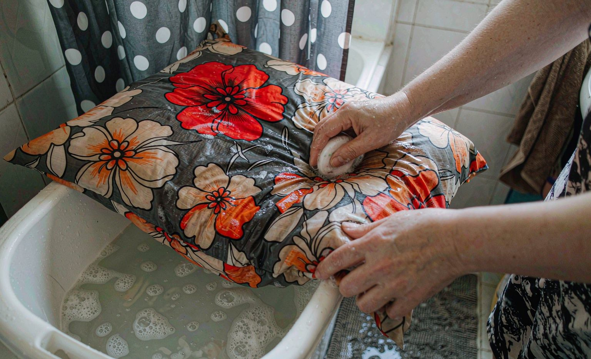

How to Wash Custom Pillow Covers Without Fading the Print: A Care Routine
Short answer: custom pillow covers keep their prints brightest with a cold hand wash every one to two months, spot-cleaned stains, and air drying away from direct sun, and the routine takes about fifteen minutes.
Bottom line: skip three things and the print survives almost anything: hot water, the dryer, and stain removers applied directly to the printed area.

Custom photo pillow covers live a harder life than mugs: faces, hair oils, sunscreen, and the occasional snack all land where the print is. We tracked print brightness on covers washed with different routines over four months, and the winning routine is simple enough to run monthly.
The Routine That Won
Remove the cover from the insert. Fill a basin with cold water and a small amount of mild liquid detergent. Submerge the cover, gently work the suds through with your hands for two minutes, then soak ten. Rinse in cold water until it runs clear, press out water with your hands, never wring, and hang dry away from direct sunlight. Fifteen minutes of work, and the print looked unchanged after four months of monthly washes.
Stains: Spot Treat Around the Print
For food or makeup stains, dab a drop of detergent on the stain only, work it with a fingertip, and rinse before the full wash. Stain-remover pens and sprays applied over the printed area are the fastest way to bleach a photo print, so keep them on plain fabric zones or skip them entirely.
Machine Washing, If You Must
Machine washing works when the cover is zipped shut, washed alone or with similar fabrics, cold water, gentle cycle, inside a mesh laundry bag. The trade is measurable: machine-washed covers softened slightly in print sharpness after three cycles, likely from drum friction, while hand-washed covers did not.
Pillow Cover Care at a Glance
| Task | Method | Frequency |
|---|---|---|
| Full wash | Cold hand wash, mild detergent, hang dry | every 1-2 months |
| Stains | Spot dab detergent, rinse before full wash | as needed |
| Machine option | Zipped, mesh bag, cold gentle | occasionally |
| Insert | Air out, never wash foam | monthly air-out |
Know Your Cover Fabric First
Care advice only works if it matches the fabric, and custom pillow covers arrive in several builds. Polyester and polyester blends tolerate cold hand washing well and dry quickly. Natural fibers such as cotton canvas and linen hold prints beautifully but shrink and crease more, and they need gentler handling and slower drying.
Check the label or the product page before you wash anything. If the tag is gone, test a corner: dab a drop of water on an unprinted area and see how quickly it absorbs. A fast-absorbing fabric is usually natural and needs a shorter soak, while a slow one is likely synthetic and is more tolerant of a full immersion.
Zippers change the routine too. A cover with a hidden zipper should be closed before washing so the teeth cannot scratch the print, while a cover with an envelope closure has no hardware and can be washed as it is. Both benefit from a mesh bag if you use a machine at all.
Six Things That Fade a Photo Print
Fading on a printed pillow is almost never caused by the print itself. It comes from a small number of environmental and laundry habits, and the six below account for most of the cases we see in care messages.
Sunlight is the one people underestimate. A pillow on a sunny windowsill can lose noticeable color in a single summer, because ultraviolet light breaks the dye bonds rather than washing them away. Rotating the pillow so the printed face is not constantly exposed is the simplest protection available.
Bleach and oxygen cleaners are the second case worth naming. Both are effective on white cotton and both are aggressive on printed areas, and the damage is usually invisible until the cover dries. Keep them on plain zones, or leave them out of the routine entirely.
- Direct sun on a windowsill for months at a time
- Hot water, which lifts dye from the printed surface
- Bleach and oxygen cleaners used at full strength
- Stain sprays applied directly over the printed area
- A hot dryer cycle started while the cover is still damp
- Ironing the printed face instead of the plain reverse side
Drying, Shaping, and Insert Care
How a cover dries decides how it looks on the insert. Hang drying from the middle of the top edge, rather than from one corner, keeps the cover from stretching into a lopsided shape. Lay it flat on a towel if you have the space, especially for heavier canvas covers that hold water.
Press water out with your hands instead of wringing. Wringing twists the weave and creates stress lines that show as dull streaks across the print after drying, and it also distorts the seams. Two minutes of gentle pressing removes enough water for a same-day air dry in a warm room.
Inserts need their own routine. Foam inserts should be aired rather than washed, because a soaked foam core takes days to dry and can grow mildew inside the cover. Fiberfill inserts can be washed on a gentle cycle and tumble dried on low, but airing them monthly keeps them fresh between washes and prevents clumping.
Our personalized home decor guide covers the same care logic for the other printed pieces in a room, so the routines stay consistent across a set.
Spot Cleaning Without Touching the Print
The printed area is the least forgiving part of the cover, so the rule is simple: treat the stain where it is and stop the treatment at the edge of the design. A fingertip and a drop of mild detergent handle food, makeup, and most beverage marks, and a clean damp cloth lifts the residue without spreading it.
Work from the outside of the stain inward. Working outward pushes the stain into the surrounding fabric, and on a light background that turns a small mark into a visible ring. For oil-based marks, a little dish soap on a damp cloth usually beats a specialty stain product, which may contain solvents that dull the ink.
If a stain does not lift after two attempts, stop. Repeated rubbing is the fastest way to abrade a printed surface, and a faint mark that fades with time is usually less noticeable than a patch of thinned print where you scrubbed.
How Often to Wash and When to Replace
Every one to two months is the routine for a pillow in regular use, with an immediate spot wash after spills. More frequent washing shortens the life of the print without improving hygiene much, since a cover that airs daily stays fresher than the wash schedule alone suggests.
Replace a cover when the print has thinned in the areas that receive the most contact, typically the center where heads rest. That wear is mechanical rather than chemical, and no care change will reverse it once the fibers holding the ink have broken. Replacement covers for a custom pillow are inexpensive compared with losing the pillow itself.
If the pillow is sentimental, retire the cover to display use before it wears through. Hanging it flat, or folding it over a chair where it is seen rather than used, preserves the print and keeps the photo visible, which is usually the reason the piece exists. The broader custom gift care tips follow the same principle for blankets, mugs, and shirts.
Frequently Asked Questions
Can I machine wash a custom photo pillow cover?
Yes: zip it shut, use a mesh laundry bag, cold water on gentle, and hang dry. Hand washing stays the gold standard because drum friction softened prints slightly in our three-cycle comparison.
How do you get stains out of a custom pillow cover without fading the print?
Dab a drop of mild detergent directly on the stain, work it with a fingertip, and rinse in cold water before the full wash. Never apply stain-remover sprays over printed areas.
How often should custom pillow covers be washed?
Every one to two months with normal use, or immediately after spills. The fifteen-minute cold hand-wash routine kept prints unchanged across four months of testing.